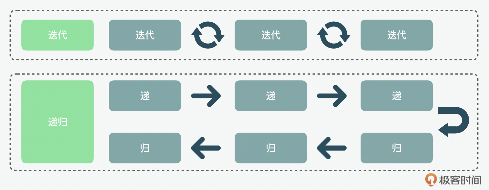
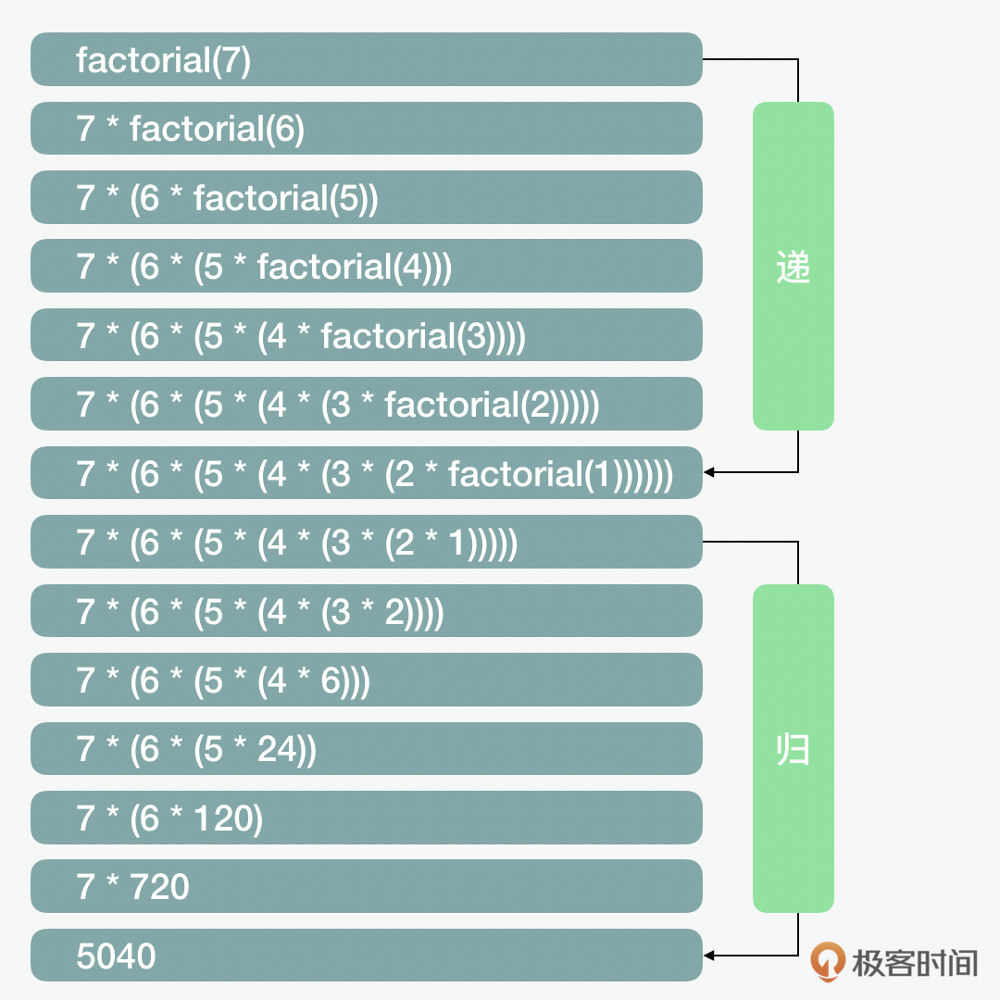
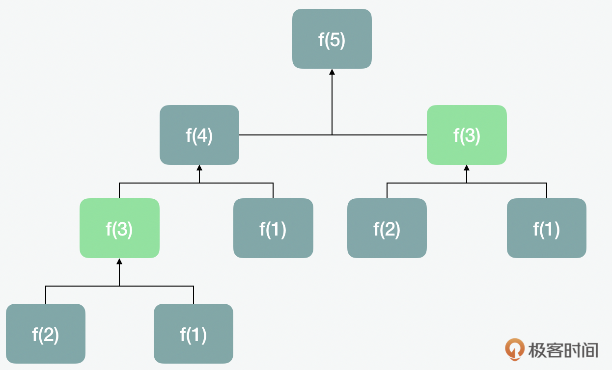
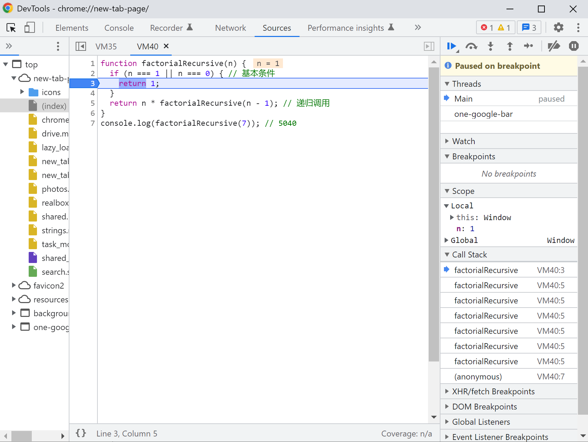
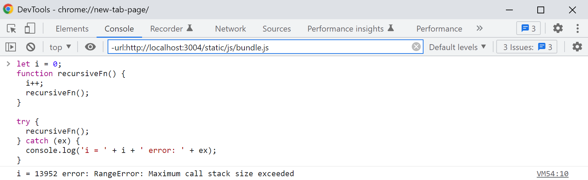
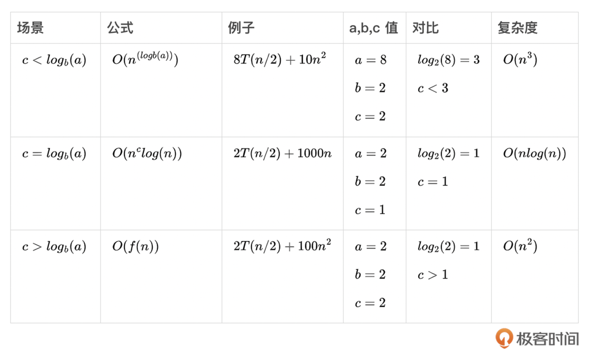
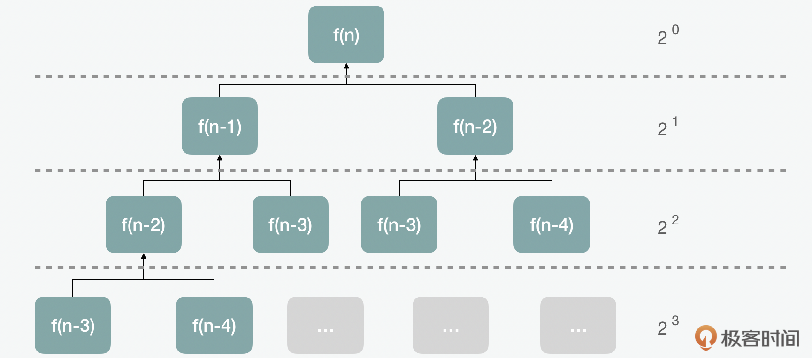
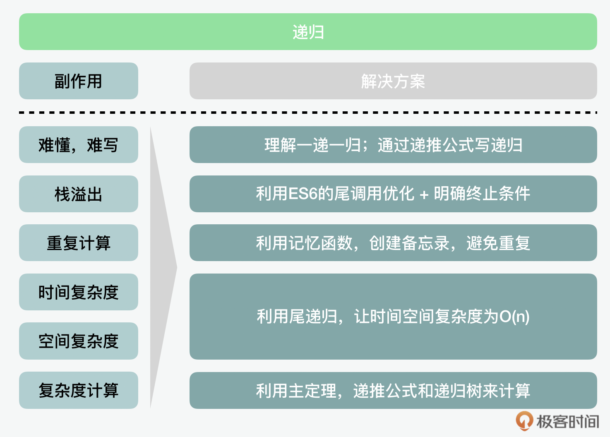

- 00 开篇词 JavaScript的进阶之路.md.html
- 01 函数式vs.面向对象：响应未知和不确定.md.html
- 02 如何通过闭包对象管理程序中状态的变化？.md.html
- 03 如何通过部分应用和柯里化让函数具象化？.md.html
- 04 如何通过组合、管道和reducer让函数抽象化？.md.html
- 05 map、reduce和monad如何围绕值进行操作？.md.html
- 06 如何通过模块化、异步和观察做到动态加载？.md.html
- 07 深入理解对象的私有和静态属性.md.html
- 08 深入理解继承、Delegation和组合.md.html
- 09 面向对象：通过词法作用域和调用点理解this绑定.md.html
- 10 JS有哪8种数据类型，你需要注意什么？.md.html
- 11 通过JS引擎的堆栈了解闭包原理.md.html
- 12 JS语义分析该用迭代还是递归？.md.html
- 13 JS引擎如何实现数组的稳定排序？.md.html
- 14 通过SparkPlug深入了解调用栈.md.html
- 15 如何通过哈希查找JS对象内存地址？.md.html
- 16 为什么环形队列适合做Node数据流缓存？.md.html
- 17 如何通过链表做LRU_LFU缓存？.md.html
- 18 TurboFan如何用图做JS编译优化？.md.html
- 19 通过树和图看如何在无序中找到路径和秩序.md.html
- 20 算法思想：JS中分治、贪心、回溯和动态规划.md.html
- 21 创建型：为什么说Redux可以替代单例状态管理.md.html
- 22 结构型：Vue.js如何通过代理实现响应式编程.md.html
- 23 结构型：通过jQuery看结构型模式.md.html
- 24 行为型：通过观察者、迭代器模式看JS异步回调.md.html
- 25 行为型：模版、策略和状态模式有什么区别？.md.html
- 26 特殊型：前端有哪些处理加载和渲染的特殊“模式”？.md.html
- 27 性能：如何理解JavaScript中的并行、并发？（上）.md.html
- 28 性能：如何理解JavaScript中的并行、并发？（下）.md.html
- 29 性能：通过Orinoco、Jank Busters看垃圾回收.md.html
- 30 网络：从HTTP_1到HTTP_3，你都需要了解什么？.md.html
- 31 安全：JS代码和程序都需要注意哪些安全问题？.md.html
- 32 测试（一）：开发到重构中的测试.md.html
- 33 测试（二）：功能性测试.md.html
- 34 测试（三）：非功能性测试.md.html
- 35 静态类型检查：ESLint语法规则和代码风格的检查.md.html
- 36 Flow：通过Flow类看JS的类型检查.md.html
- 37 包管理和分发：通过NPM做包的管理和分发.md.html
- 38 编译和打包：通过Webpack、Babel做编译和打包.md.html
- 39 语法扩展：通过JSX来做语法扩展.md.html
- 40 Polyfill：通过Polyfill让浏览器提供原生支持.md.html
- 41 微前端：从MVC贫血模式到DDD充血模式.md.html
- 42 大前端：通过一云多端搭建跨PC_移动的平台应用.md.html
- 43 元编程：通过Proxies和Reflect赋能元编程.md.html
- 结束语 JavaScript的未来之路：源于一个以终为始的初心.md.html
- 捐赠
12 JS语义分析该用迭代还是递归？
你好，我是石川。
在前面两讲中，我们学习了JavaScript语言的数据类型，通过堆栈的数据结构了解了闭包的原理。这一讲，我们来聊聊算法。前面我们在讲到编程模式时提到，如果说函数式编程是输入、计算和输出，那中间的计算部分就可能用到算法了。而迭代和递归可以说是非常基础的算法。
迭代相对比较好理解，只要用过for loop的话，你对它就不会太陌生，而递归比较难理解。但和闭包一样，一旦你掌握了它的运用技巧，就会体会到它的强大之处。
我们在讲到函数式编程的时候，也说过一个很重要的思想就是“副作用”，而递归就自带很多副作用，相应地也出现了很多的解决方案。今天，我们就来看看它都有哪些副作用，以及解决这些副作用我们可以用哪些方法。
那在这之前，我们先来看看迭代和递归分别是什么。
迭代和递归的区别
首先我们得搞清楚迭代和递归有什么区别？
先说迭代，举个例子。做过软件工程的同学都经历过迭代吧，如果是一个敏捷的项目，它的过程就是一个小步快跑的过程，功能不是一下子都做出来的，而是根据优先级，先做优先级高的，再做优先级低的。这就是一个通过循环往复不断完善的过程。
而递归呢，就好比我们寄快递。寄出去的过程是递，收到签收的回执就是归，但是这个过程中间可不只一个人，而是在寄出去的过程，是一个人先运到中转站，再有人运到联络处，最后才到我们手中。哪怕回去的回执是电子的，但在网络世界里，信息的传递也是需要经过每个节点。这样的一去一回就是递归。

而同样的一个问题，我们可能既可以用迭代的方式来做，也可以用递归的方式来做。
比如我们要计算阶乘。7的阶乘是“7!”，等于 7 * 6 * 5 * 4 * 3 * 2 * 1，结果是5040。如果用一个迭代函数来计算，大概是如下的方式。在每一次的迭代循环过程中，我们都用之前的乘积乘以下一个要迭代的 n 递减的数字。
function factorialIterative(number) {
if (number < 0) return undefined;
let total = 1;
for (let n = number; n > 1; n--) {
total = total * n;
}
return total;
}
console.log(factorialIterative(7)); // 5040
如果我们用递归的方式来解决会是什么样子呢？
在递归里面，通常有两个基本元素，一个是基本条件（base case），也叫做终止条件（stop point）；另外一个是递归本身。
现在我们可以看到，如果我们把上面的例子转变成递归的形式，即如下。在递归中调用的函数一般就是函数本身。
function factorialRecursive(n) {
// 基本条件
if (n === 1 || n === 0) {
return 1;
}
// 递归调用
return n * factorialRecursive(n - 1);
}
console.log(factorialRecursive(7)); // 5040
上面这段代码在执行中如下。我们可以看到前面7步，都是递的过程。在碰到基本条件后，开始了归的过程。

递归中用到的分治
下面我们再来用经典的斐波那契（Fibonacci Sequence）数列对比下迭代和递归。斐波那契数列的特点就是这个数列从第3项开始，每一项都等于前两项之和。按照这样的规则，到第10项的时候，相加的值应该是55。
1，1，2，3，5，8，13，21，34，55
如果用迭代的方式来写计算第n项的斐波那契数的函数的话，大致如下：
function fibIterative(n) {
if (n < 1) return 0;
if (n <= 2) return 1;
let fibNMinus2 = 0;
let fibNMinus1 = 1;
let fibN = n;
// n >= 2
for (let i = 2; i <= n; i++) {
// f(n-1) + f(n-2)
fibN = fibNMinus1 + fibNMinus2;
fibNMinus2 = fibNMinus1;
fibNMinus1 = fibN;
}
return fibN;
}
console.log(fibIterative(10)); // 55
如果我们使用的是递归的话，从代码上看就简洁多了。在这里我们也使用了另外一个核心算法思想，就是分治（divide and conquer）。分治的意思就是分而治之。因为前面我们说了，斐波那契数列的特点就是这个数列从第3项开始，每一项都等于前两项之和。所以在这里，我们就先分别调用fibRecursive(n - 1)和fibRecursive(n - 2)这两个递归函数来分别计算前两项，之后我们再把它们相加，得到最终的结果。
function fibRecursive(n){
// 基本条件
if (n < 1) return 0;
// 基本条件
if (n <= 2) return 1;
// 递归+分治
return fibRecursive(n - 1) + fibRecursive(n - 2);
}
console.log(fibRecursive(10)); // 55
但是这里有一个问题，当我们在计算fibRecursive(5)的时候，fibRecursive(3)被计算了两次。

那么有没有什么办法，能够记住之前计算的结果，来避免这种重复的计算呢？
递归中的记忆函数
对了，我们可以利用上节课学到的作用域和闭包，在这里它又一次展示了它的强大。我们可以用闭包把递归函数中加入记忆（memoization）。在这里，fibonacci是一个递归，但是我们让它调用了一个外部的memo参数，这样一来memo就带有了“记忆”。我们可以用它来存储上一次计算的值，就可以避免重复计算了。所以记忆函数经常和递归结合起来使用。这里解决的重复计算问题，在算法中也被称为重叠子问题，而记忆函数就是一个备忘录。
function fibMemo(n, memo = [0, 1, 1]) {
if (memo[n]) {
return memo[n];
}
// 递归+分治+闭包
memo[n] = fibMemo(n - 1, memo) + fibMemo(n - 2, memo);
return memo[n];
}
console.log(fibMemo(10)); // 55
递归中的尾递归
在上面的例子里，我们可以看到它的时间复杂度是\(O(2^{n})\)。那有没有办法能够把时间和空间复杂度都降低到\(O(n)\)呢？这里面我们可以看看尾递归。尾递归的意思就是在函数的尾部执行递归的调用。通过用尾递归的方式，最多递归n次，因为在每次递归的过程中都会n-1。
function fibTailRecursive(n, lastlast, last){
if (n == 0) {
return lastlast;
}
if (n == 1) {
return last;
}
return fibTailRecursive(n-1, last, lastlast + last);
}
console.log(fibTailRecursive(10, 0, 1)); // 55
递归中的内存管理
在上一讲中，我们在了解闭包的原理的过程中也了解了函数调用栈的概念。在国外，有一个很有名的技术问答网站叫做stack overflow，翻译成中文就是栈溢出。在我们用递归的时候，如果没有很好的控制，就会遇到这个性能问题。所以下面，我们再来看看递归中的内存管理。
在前面的例子中，我们看到在用递归来代替迭代的方案中，虽然它的写法比迭代要简便，但付出的是性能上的代价。因为这是一个函数不断自己调用自己的过程，会占用大量栈的空间，所以除了时间复杂度，它会有较高的空间复杂度需要考虑。而且稍有不慎，当它不能停止被调用的时候，可能会引起栈溢出。
比如在前面乘阶的例子中，我们可以在调用栈（call stack）中看到函数每次被调用的过程。

JavaScript从ES6版本的标准开始，定义了尾调用优化。里面提到，如果一个函数是一个函数里的最后一个动作，它会被当做跳转而不是子程序来处理。也就是说这个代码会不停地被重复，所以这也是为什么要有一个基本条件的重要性。在实际操作中，绝大多数浏览器都会自己定义一个防止栈溢出的限制，比如Chrome在下面的一个无限循环的例子中调用了13952次之后，就出现了一个超出最大栈范围的错误消息，并且停止了递归。
let i = 0;
function recursiveFn() {
i++;
recursiveFn();
}
try {
recursiveFn();
} catch (ex) {
console.log('i = ' + i + ' error: ' + ex);
}

延伸：递归复杂度计算
在迭代中，Big-O的分析相对简单，因为循环可以清楚地定义什么时候增加、减少或者停止。但是在分析递归的时候，我们就需要分析两个部分了，一个是基础条件，一个是递归。所以在做递归的复杂度计算，通常会用到主定理（master theorem）。我们先来看看这个定理的组成部分。
在这里面，n是问题规模的大小，a是子问题个数，n/b是每个子问题的大小，\(O(n^{c})\)是将原问题分解和将子问题的解合并的时间。
\[T(n) = aT(n/b)+O(n^{c})\]
基于\(c\)和\(log\_{b}(a)\)的对比，会有三种结果。\(log\_{b}(a)\)代表了\(aT(n/b)\)，即解决当前层问题所需要的时间复杂度；\(c\)代表了\(O(n^{c})\)，即将原问题分解和将子问题的解合并的时间。

当然我们说并不是所有递归问题都符合主定理公式的形式，那么遇到这种问题该怎么办呢？在这种情况下，我们也可以尝试使用递推公式和递归树。
下面，我们先来看看使用递推公式的方式。递推公式可以帮助我们在写递归的时候，设计递归函数。同时，它还有另外一个作用就是计算复杂度。如果我们用递推公式来计算斐波那契的时间复杂度的话，要先提炼出它的递推公式及时间复杂度的推导过程。这里，你可以看到，每一次函数调用会产生两次额外的调用，计算呈指数级增加。
// 斐波那契递推公式
T (n) = T (n − 1) + T (n − 2)
// 时间复杂度的推导
T(n) = T(n − 1) + T(n − 2) + O(1);
T(n − 1) = T(n − 2) + T(n − 3) + O(1);
T(n − 2) = T(n − 3) + T(n − 4) + O(1);
// 每次指数级的增加
f(6) * <-- 一次
f(5) *
f(4) **
f(3) ****
f(2) ********
f(1) **************** <-- 16
f(0) ******************************** <-- 32
上面通过递推公式计算复杂度的方式还是很复杂的，那么还有没有更简单直观的计算方式呢？我们来看看递归树。递归树的方式，我们可以更直观地看出结果。这里当长路径为n的话，对应的耗时为\(2^{n}-1\)，所以最高的时间复杂就是\(2^{n}\)。

总结
这节课我们学习了算法中最核心的两种方法，迭代和递归。就和我们讲JavaScript编程范式的时候，讲到函数中的闭包和对象中的this一样，你会发现，我们后面讲到的80%算法都离不开它的影子。请记住这个二八定律，只要把迭代和递归的概念吃透搞明白，对算法的学习，可以说是有着事半功倍的效果。
如果要对比迭代和递归的话，从整体的性能来说，迭代是优于递归的。而如果从代码的整洁性来看，递归看起来更简洁。而且递归和作用域、闭包结合起来形成的记忆函数和尾递归，都能从一定程度上减少其“副作用”。下面我们就结合这张图，总结下针对这些副作用的解决方法吧。

所以在算法中我们应该用迭代还是递归呢？这里同样没有绝对，应用上，你可以根据它们的优劣势，结合实际情况来应用。我个人认为，我们写的代码主要还是给人读的，而不是最终的机器码。所以我的建议是以代码的“简洁可读性”为先，然后再针对机器无法替我们优化的“副作用”的部分所产生的问题做手动的优化。
思考题
前面我们讲到了针对栈溢出的尾调用优化，你知道尾递归调用优化是如何实现的吗？
期待在留言区看到你的分享，我们一起交流讨论。另外，也欢迎你把今天的内容分享给更多的朋友。
© 2019 - 2023 Liangliang Lee. Powered by gin and hexo-theme-book.